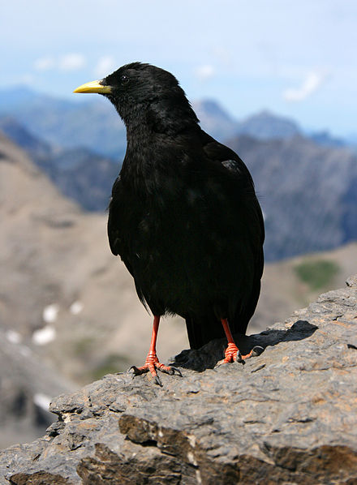

WIKIPEDIAThe Free Encyclopedia
- Main Page
- Content
- Featured Content
- Current Events
- Random Article
- Dontate to Wikipedia
- Wikipedia Store
- Interaction
- Help
- About Wikipedia
- Community Portal
- Recent Changes
- Contact Page
- Tools
- What links here
- Related Changes
- Upload File
- Specia Pages
- Permanent Link
- Pages Information
- Wikipedia Item
- Print/Export
- Create a book
- Download as PDF
- Printable version
- Languages
- Simple English
- Bahasa Indonesia
- Bahasa Melayu
- Bosanski
- Catala
- Cessna
- Deutch
- Espanol
- Esperanto
- Euskara
- Francais
- Galego
- Hrvatski
- Italiano
- Latsvieso
- Lietuviq
- Magyar
- Nederlands
- Nodsk Bokmal
- Norsk Mynorsk

Welcome to Wikipedia,
The Free encyclopedia that anyone can edit 5,078,210 articles in English
- Arts
- History
- Society
- Biography
- Mathematics
- Technology
- Geography
- Science
- All Portals
From todays feature article
The Alpine chough /ˈtʃʌf/, or yellow-billed chough, (Pyrrhocorax graculus) is a bird in the crow family, one of only two species in the genus Pyrrhocorax. Its two subspecies breed in high mountains from Spain eastwards through southern Europe and North Africa to Central Asia and Nepal, and it may nest at a higher altitude than any other bird. The eggs have adaptations to the thin atmosphere that improve oxygen take-up and reduce water loss. This bird has glossy black plumage, a yellow beak, red legs, and distinctive calls. It has a buoyant acrobatic flight with widely spread flight feathers. The Alpine chough pairs for life and displays fidelity to its breeding site, which is usually a cave or crevice in a cliff face. It builds a lined stick nest and lays three to five brown-blotched whitish eggs. It feeds, usually in flocks, on short grazed grassland, taking mainly invertebrate prey in summer and fruit in winter; it will readily approach tourist sites to find supplementary food. Although it is subject to predation and parasitism, and changes in agricultural practices have caused local population declines, this widespread and abundant species is not threatened globally. Climate change may present a long-term threat, by shifting the necessary Alpine habitat to higher altitudes.
Did you know?
The Alpine chough /ˈtʃʌf/, or yellow-billed chough, (Pyrrhocorax graculus) is a bird in the crow family, one of only two species in the genus Pyrrhocorax. Its two subspecies breed in high mountains from Spain eastwards through southern Europe and North Africa to Central Asia and Nepal, and it may nest at a higher altitude than any other bird. The eggs have adaptations to the thin atmosphere that improve oxygen take-up and reduce water loss. This bird has glossy black plumage, a yellow beak, red legs, and distinctive calls. It has a buoyant acrobatic flight with widely spread flight feathers. The Alpine chough pairs for life and displays fidelity to its breeding site, which is usually a cave or crevice in a cliff face. It builds a lined stick nest and lays three to five brown-blotched whitish eggs. It feeds, usually in flocks, on short grazed grassland, taking mainly invertebrate prey in summer and fruit in winter; it will readily approach tourist sites to find supplementary food. Although it is subject to predation and parasitism, and changes in agricultural practices have caused local population declines, this widespread and abundant species is not threatened globally. Climate change may present a long-term threat, by shifting the necessary Alpine habitat to higher altitudes.